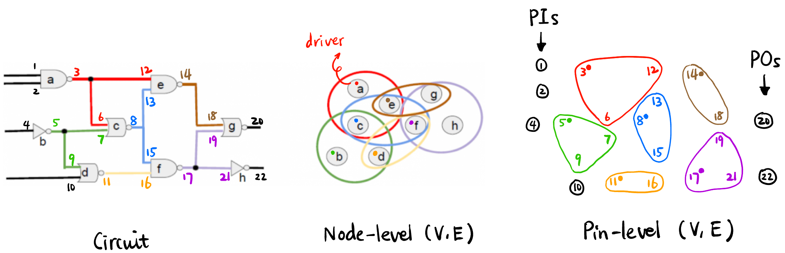
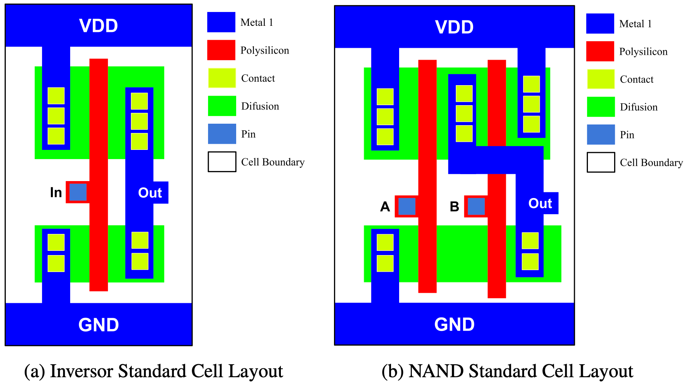

EDA Notes 笔记
Takeaways
- 处处都是优化问题, 一般的思路就是先 brainstorm 你能想到的要减小的「因素1」, 然后一股脑全加起来作为 Loss function. 然后:
1 要增大的话填负号即可; 当然这些「因素」很多时候是相互冲突的, 而且有些「因素」比较定性, 一时间很难想出清晰的表达式, 即使有清晰的表达式计算量也极其大.
Net weight [1] 的 idea 告诉我们有些难以单读开一个表达式的「因素」可以融入其它的「因素」里!
体会概念背后的直觉意义而不是定义本身
- 这在数学和工程学上同样重要. 学科中都有很多「原子」概念, 比如数学中的 group, topological space, EDA 中的 pin, node 等, 他们封装了一些非常基本的思想, 出现频率非常高, 需要牢记. 但是在科研领域, 会发现出现了很多为了研究某种特定的对象外延出来或者人为定义的新概念, 比如数学中的 Schwartz space (为了严格化 Fourier transform 而定义的函数空间), \(\pi\)-system / semialgebra (为了定义 measure 而定义的集合族), EDA 中的 net slack (为了外延 slack 到 net 上而人为定义的量2) 和 Criticality [1], 它们没有所谓的「正确」定义, 只要定义出来的量能够反映你想表达的东西即可. 不需要花时间记住定义问题, 理解作者的研究方法和解决问题的思路! 如果作者没有说明具体定义, 大不了你自己定义一个类似的量来替代它们!
- 再比如 Netlist \((V, E)\) 的两种定义方式, “Undirected convention”, lol.
2 Slack 本来是针对某个 pin/node 定义的, [1] 却不加定义地在文章中使用了 “net slack” 这个概念, 可见作者想去度量一个 net 的时序违规程度, 如何定义呢? 可以用该 net 中所有 sink 的最坏 slack, 当然也可以用该 net 中所有 sink 的 slack 之和, 没有唯一答案!
- Unitary operator 的思考方式: 当作没有!
- 比如定义 \(\tilde{w} := \log w\), 由于 \(w\) 和 \(\tilde{w}\) 的单调性, 优化问题不会变, 思考的时候直接忽略 \(\log\) 就行了 [1].
Some Terms
Hypergraph 超图: 图的一种推广, Netlist 常被建模成 (Directed [1]) hypergraph \((V, E)\) (edge 可以有多个 vertex). 一般有 Node-level 和 Pin-level 两种定义方式:
- \(V\):
- \(E\) 有直接连接关系的 node 集合, 其中的元素称为一个 net.
- 在 Timing-driven placement 里, 一般 \(E\) 可能仅代表 Timing arc 集合.
- “Undirected convention”: 虽然 hypergraph 是 directed 的, 即 edge 集在数学上表现为比如: \[E = \bigl\{\{(p_1, p_3), (p_2, p_3), \cdots\}, \{(p_4, p_6), (p_5, p_6), \cdots\}, \cdots \bigr\}\] E.g., \[E \ni e = \{(p_1, p_3), (p_2, p_3), \cdots\}\] 但为了 Notation 的简洁性, 我们还是把 \(E\) 当作 vertex 的集合来看待 (即看作 undirected hypergraph): \[E \ni e = \{p_1, p_2, p_3\}\]
Figure 1: Directed Hypergraph \((V, E)\) 的两种意义 (Adapted from [4], 采用 “Undirected convention”); Pin-level 的 \(E\) 之间一定没有 intersection; PIs (primary inputs); POs (primary outputs). Layout: 元件或电路的 electric function 的几何图形表示 [5].
Standard Cell (std cell) 标准单元: 一组实现逻辑门的物理单元 (AND, OR, NOT, NAND, etc.) [5]. 他们过于基础以至于被称为 “standard”.
Figure 2: NOT 和 NAND 的 layout [5]

Placement 布局
三个阶段
- Global (coarse/initial) placement: 把 cell/macro 粗略地放置在芯片上的过程 (不必对齐 row/site, 单元之间允许重叠, 但其实会尽量避免重叠) [5].

- Legalization 合法化: 消除重叠和在两个方向对齐的过程 (见 Figure fig-legalization). Cell/macro 不能随便放置, 而要在两个方向对齐:
- Row: 见 Figure fig-layout, 每个 std cell 的上下为该 cell 的供电 metal (上 VDD 下 GND), 我们希望每个 std cell 的这两个 metal 共线, 这样才方便提供统一的供电. 自然的, 所有 cell/macro 要在水平方向成一条线, 使得 die 有“一层一层”的概念, 每一层称为一个 row. Row height 等于 std cell height; Row 分隔线 (见 Figure fig-sitedemo 的蓝色条) VDD 和 GND 交替.
- Site: Row 引入了「层」, 而 site 给每一层也数字化引入了「门牌号」, 每个 cell/macro 必须对齐到 row 和 site 边界!

Figure 6: Std cell 必须上下对齐 row, 左右对齐 site [5]; 且下面一层的 std cell 需要 flip! - Detailed placement
Wirelength Model

Density Model
Bin: 仅仅是为了方便计算3布局的密度 [7] (即有限元方法), 整个 die 被划分为若干个小的矩形区域 (厚度跟 die 的厚度一样), 每个小区域称为一个 bin [3] (见 Figure fig-bindemo). 所有的 bin 组成的集合记作 \(B\).

Figure 8: 此图中 bin 的高度是 row height 的 \(4\) 倍 [5]
3 注意区分 bin 和 row/site 围成的小方格! 前者是为了计算密度而人为划分的区域, 后者是为了放置 cell/macro 而划分的区域.
Timing Model
- 现在我们还要考虑 slack 的问题 (只考虑 Setup 违规). 由于 slack 跟 wirelength 是有关系的, 将 timing term 与线长解耦是不方便的, 即无法在 Loss function 里单独引入衡量 Timing 的项. [1] 天才般地通过引入 Net weight 这个概念将 timing 的信息融合进 wirelength model 里 (Timing-driven placement).
- 一个自然的想法是给每个 net 加上权重, 如果一个 net 的 slack 非常负, 说明它的线长急需减小, 那么就给它一个很大的权重. 所以, 可以考虑将 \(-\text{slack}\) 直接作为 net weight.
- 但是这样实际操作的话会发现优化过程不稳定甚至发散. [1] 文中用了两个貌似 heuristic 的方法来稳定训练过程:
- 将 \(-\text{slack}\) 作为 net weight 的增量 (而不是直接作为 net weight) ——
- 也不完全是, 这个增量本身的变化是带动量的 (需要进行历史平滑).
- 当然我忽略了以下细节 (不重要):
- 所有量都在 Log scale 下运算.
- 先要把 slack 转为另一个叫 Criticality 的量.
- 作者还引入了两个超参数 \(\alpha, \eta\) 来调节历史平滑的程度和「小球」的质量大小.